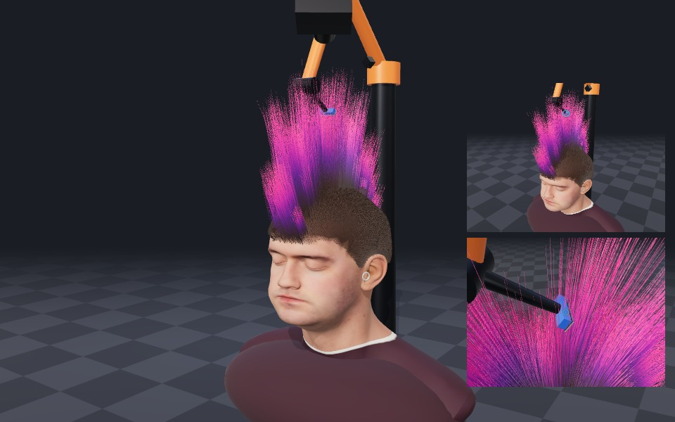

Junction 2026 / AfterQuery
Haircut
A robot arm has 252 actions to trim 42 patches of hair without nicking the scalp.

Open a replay
Terra · revised
+0.0339Zero nicks. One patch on target.
Terra · revised repeat
0.0000Six patches shortened. Zero nicks or patches on target.
Luna · revised
−0.1120Two nicks. One patch on target in 252 actions.
Terra · original
−5.005466 nicks. One patch on target.
Scripted · manual controls
+0.4315Blade XYZ and public geometry. 16 patches on target.
Scripted · noisy depth
+0.740033 patches on target. Zero nicks.
Terra · mohawk
0 / 16Crest patches on target. Six shortened, zero nicks.
Scripted · mohawk
10 / 16Crest patches on target. All shortened with noisy depth, zero nicks.